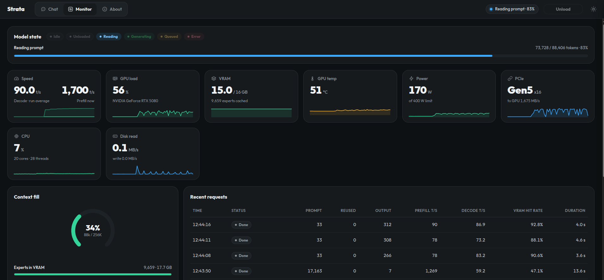

行业动态 › 正文
2026-11-11本地实测 · 三选项闭环本站 11 月 10 日定档四档量化后留了三个调优尾巴：batch 2 路并发、对话停放异步化、CUDA 13 重编点亮 FP4。今天三选项全部实测闭环，答案一致：本机无收益，引擎默认配置一字未改。同一天还跑了收官一战——IQ3_S 与 NVFP4 的 304 题能力终评：231 比 228，配对检验 p=0.61，能力打平；主力按速度与内存定给 IQ3_S。这一篇同时勘误一处历史分数口径，文末附近期全部测试的对比总表，以及主力档此刻在现网跑活实况的监控页实拍。
本站 11 月 10 日连发了两篇四档量化终版横评——结论版与数据全表版，把 Qwen3.8-Flash-Next 在一台双卡消费机（RTX 5080 16 GB ＋ RTX 5070 Ti 16 GB）上的四个量化档测完并定了分工。发布时留了三个未闭的调优选项：① batch 2 路并发加 STRATA_PW_WITH_BATCH=1；② 对话停放（park）异步化；③ 换 CUDA 13 重编引擎点亮真 FP4（w4a4）。今天三选项全部冷启动 A/B 测完，全部不采用；同时把两篇发布后头号的遗留问题——「IQ3_S 和 NVFP4 长期到底供哪档」——用 304 题六阶段能力套件做了终评，并附一处历史分数勘误与近期全部测试的对比总表。
口径先钉死：同一台机器、同一引擎（0.2.13 树 · 引擎 0.1.59、CUDA 12.9 构建），每个选项一组独立冷启动：SIGTERM 停上一个实例 → 断言显存 <3 GiB、MemFree ≥40 GiB、GUP 钉页账本 <8 GiB → 带新参数启动。今天现网那个实例（见第六节截图）与被测实例全程分离，跑测数字里没有现网流量，现网读值也不混进任何跑测表。
官方文档里 STRATA_PW_WITH_BATCH=1 报的收益是 +3~14%%——但那是两张 48 GB 专业卡的机房条件。本机每张卡只有 16 GB，问题变成两个：显存留不留得下，和单流代价换并发值不值。四组冷启动（batch1 对照 / batch2 @900 / batch2 @1400 / batch2＋PW @1400，数字为每长度三次重复的中位）：
| 配置（预留 MiB） | 解码 8k | 解码 32k | 解码 66.5k | 预填充 32k | 命中率 32k |
|---|---|---|---|---|---|
| batch1 对照 预留 900 | 102.1 | 107.2 | 103.6 | 1,263.3 | 92.0 |
| batch2 @900 预留 900 | 80.2 | 63.1 | 65.0 | 1,191.7 | 73.3 |
| batch2 @1400 预留 1400 | 62.3 | 64.3 | 66.7 | 1,201.5 | 77.4 |
| batch2＋PW @1400 同上 + STRATA_PW_WITH_BATCH=1 | 71.5 | 64.3 | 64.1 | 1,156.6 | 79.3 |
两组差值现算：开 batch 2 后单流解码掉 -21.4% / -41.1% / -37.3%（8k/32k/66.5k，同预留组对照），命中率也从 92.0% 掉到 77.4%（32k 档）；而 PW 开关本身在 1400 组只有 +14.8% / +0.0% / -3.9%——首档 +14.8% 后面两档直接归零或转负。引擎日志原话印证了它的生效方式：strata generate: --pipeline-windows 2 stays on for the solo path beside 2 batch slots (STRATA_PW_WITH_BATCH=1); batch windows run without it
| 配置 | 单流 8k×1 墙钟（秒） | 并发 8k×2 墙钟（秒） | 并发/单流 |
|---|---|---|---|
| batch2 @900 | 14.9 | 32.1 | 2.15× |
| batch2 @1400 | 16.4 | 34.1 | 2.08× |
| batch2＋PW @1400 | 16.3 | 33.4 | 2.05× |
关键一行：两路并发的墙钟恰好是单流顺序跑的 2.05~2.15 倍——两条流分食同一份带宽与缓存，聚合吞吐纹丝不动。所谓「并发更快」在这台机器上不存在，存在的只有「同一件事做完的总时间不变、但每条回复都变慢」。另外 batch2 对启动也不友好：默认预留 300 时 hand-off 临界崩溃（同配置一崩一成），稳定线在 900，开 PW 要抬到 1400。
PARALLEL=2 RESERVE=1400 LATER_RESERVE=1500；PW 开与关打平，不必开。官方优化是把停放存档挪到显存暂存＋异步提交（PCIe Gen2×4 慢机器上存档 212 ms→64 ms）。本机链路是 Gen5 直连，同步存档本来就只有毫秒级；测法固定：三个 ~3k 词元会话轮换 3 轮，每轮新会话冷读、旧会话热复用。
| 运行轮 | 冷读墙钟（秒） | 热复用墙钟（秒） | 复用词元均值 | 存档 resize 峰值（ms） |
|---|---|---|---|---|
| 同步（batch 对照轮） | 5.8 | 0.6 | 2,115 | 2.51 |
| 同步（@1400 轮） | 6.1 | 0.6 | 2,116 | 2.33 |
| 同步（batch2＋PW 轮） | 6.1 | 0.7 | 2,116 | 2.29 |
| 异步（PARK_ASYNC） | 6.3 | 0.8 | 2,115 | 24.24 |
三件事当场定死。其一，同步停放本来就便宜：热复用墙钟 0.6~0.7 秒（冷读 5.8~6.3 秒），存档动作峰值只有 2.51 ms——异步没有可省的钱。其二，开异步反而更差：热轮墙钟 0.8 秒（比同步组慢），存档 resize 峰值从 2.51 ms 跳到 24.24 ms。其三，显存暂存这条在本机根本没激活：官方门槛是加载后空闲显存 ≥1,500 MiB，本运行轮加载后只剩 1,435 / 1,431 MiB；把 PARK_VRAM_MIB 强压到 1024 则启动直接被挤崩（该轮进程未达就绪）。
对话复用的真正来源本来就不是显存暂存，而是引擎从空闲内存划的会话缓存，启动日志原话：strata serve: conversation cache sized from the free RAM: 8192 MiB for up to 4 parked conversations, so an agent's next turn reuses its prompt (--conversation-cache-mib N sets it, 0 turns it off)。也就是说 agent 多轮「不重读前缀」在默认配置下已经生效，停放异步化属于给一个毫秒级动作再加一层异步——裁决：不采用（PARK_ASYNC / PARK_VRAM_MIB / CKPT_* 一律不入默认）。
昨天遗留的最后一问：NVFP4 的 w4a4 到底能不能点亮。上一轮在 CUDA 12.9 / sm_120 构建上 FP4 零提速，怀疑缺的是 Blackwell 的 120a 目标。今天把 CUDA 13.4 工具链解包、把引擎整个重编成 sm_120a（构建 rc=0，产物 125.3 MB，二进制里 120a SASS 计数 71 处，ldd 全部解析到 CUDA 13 系列库），同一探针组跑 NVFP4 双卡 K24 与 IQ3_S 对照。
| NVFP4 预填充（tok/s） | 8k | 32k | 66.5k | 真 131k |
|---|---|---|---|---|
| CUDA 12.9 · w4a8（昨日定档） | 955.2 | 1,217.2 | 1,480.4 | 1,620.1 |
| CUDA 13.4 · w4a8 | 939.9 | 1,197.8 | 1,458.9 | 1,585.4 |
| CUDA 13.4 · w4a4 | 945.3 | 1,200.6 | 1,465.0 | 1,585.9 |
w4a4 对 w4a8 的差值现算：+0.6% / +0.2% / +0.4% / +0.0%——四个档全部在噪声内，重复三次的波动本身都比它大。对照轮也顺手做了：同一 CUDA 13 构建跑昨天的 IQ3_S 定档，预填充 -12.4% / -4.1% / -5.1%、解码 -4.0% / -1.7% / -1.9%（8k/32k/66.5k），全面小幅回退——换 cuBLAS 大版本改变的是 GEMM 启发式，不是搬运速度。
为什么换编译器不动墙钟：这台机器上 NVFP4 预填充的瓶颈是 72.3 GiB 专家数据以实测 41.0 GB/s 的 PCIe 往卡上过，GEMM 部分哪怕免费，搬运时间也一分不少。裁决：不采用——现役引擎保持 CUDA 12.9 build-cuda 不动，build-cuda13 留档对照；w4a4/FP4 这个方向在两轮（CUDA 12 与 13）实测后永久关闭。
两档各跑六阶段 304 题：指令遵循 20、逻辑 12、MMLU-Pro 抽 196、GSM8K 40、MATH-500 抽 30、大海捞针 6（32k/128k 两深度 × 三深度位置）。同题同 seed 同协议、温度 0、生成式判分（Strata 无 logprobs 口径），全部逐题 jsonl 落盘。
| 阶段（题数） | IQ3_S | NVFP4 | 只对① / 只对② | McNemar p |
|---|---|---|---|---|
| IFEval-lite（20） | 19（95.0%） | 18（90.0%） | 1 / 0 | 1.00 |
| 逻辑推理（12） | 12（100.0%） | 12（100.0%） | 0 / 0 | — |
| MMLU-Pro 抽样（196） | 131（66.8%） | 129（65.8%） | 8 / 6 | 0.79 |
| GSM8K（40） | 40（100.0%） | 40（100.0%） | 0 / 0 | — |
| MATH-500 抽样（30） | 23（76.7%） | 23（76.7%） | 0 / 0 | — |
| 大海捞针（6） | 6（100.0%） | 6（100.0%） | 0 / 0 | — |
| 合计（304） | 231（76.0%） | 228（75.0%） | 9 / 6 | 0.61 |
判读：Wilson 95% 置信区间① 70.9~80.4%、② 69.8~79.5%，大幅重叠；304 题里两档只有 15 题判分相反（McNemar p=0.61）；MATH 抽样 30 题错题逐题一致——同一个底模温度 0 下的预期形态。这套题在这台机器上能可靠分辨的差距下限约 2.5 个百分点，实测差只有 1.0——能力打平，差异在噪声内。
| 维度 | IQ3_S（双卡定档） | NVFP4（双卡 K24） | 占优 |
|---|---|---|---|
| 日常解码（8k~66.5k） | 106.4~111.3 | 79.6~85.2 | IQ3_S 快三成以上 |
| 真 131k 解码 | 106.4 | 124.9 | NVFP4 反超 |
| 预填充 32k / 真 131k | 1,348.8 / 1,576.7 | 1,217.2 / 1,620.1 | 接近，NVFP4 略胜 |
| 冷启动加载（秒） | 29 | 44~60（多次启动） | IQ3_S |
| 常驻内存（GiB） | 36.33~42.35 | 54.89~60.94 | IQ3_S 省约 20 |
| 官方 top-1 一致率（Q8_0 参照） | 87.69% | 92.09%（KL 0.070） | NVFP4 |
| 304 题套件（今日，套件口径） | 231 | 228 | 打平（p=0.61） |
长期主力定为 IQ3_S。能力打平之后，选择就落在速度、加载与内存三件事上：日常与 agent 场景（短中上下文占绝大多数）解码快 30% 以上、加载快一半、常驻内存省约 20 GiB；真 131k 也有 106.4 不算拉胯。NVFP4 官方一致率更高（92.09% vs 87.69%）、真超长上下文解码反超 17%，保留为「>100k 上下文专用档」。若只允许常驻一个档：IQ3_S。

2026-11-11 12:54 本机监控页实拍：正在读取一段 88,406 词元的 agent 提示（已完成 83%），瞬时预填充 1,700 tok/s；解码运行均值 90.0 tok/s；显存 15.0/16 GB（专家缓存 9,659 块 / 17.7 GiB）；GPU 56% 负载、51 ℃、170 W（上限 400 W）；PCIe Gen5 x16 实测过卡 1,675 MB/s；上下文占用 34%（88k/256K）；CPU 7%、磁盘读 0.1 MB/s。
截图里的进程就是刚定的主力档：IQ3_S 双卡、启动参数与昨天数据全表版定档完全一致（--prefill auto:8192 --pipeline-windows 2 --layer-split auto --max-context 262144 --spec 4 --kv k8v4）。一段 88,406 词元的真实 agent 上下文在 --pipeline-windows 2 上读到 73,728 词元时，瞬时预填充 1,700 tok/s——比第五节跑测表里的任何一档都高，因为现网这段大量命中了已缓存前缀。跑测与现网全程分离：本节读值不进任何跑测表，跑测实例与它互不同时。
速度矩阵（解码与预填充 tok/s，顺序 1k / 8k / 32k / 66.5k / 真 131k；引擎 0.1.59，11-10 冷启动）：
| 档 | 定档配置 | 解码（五长度） | 预填充（五长度） |
|---|---|---|---|
| IQ3_S | 双卡 auto(11层Ti)＋流水窗口2 | 109.3 / 106.4 / 109.1 / 111.3 / 106.4 | 208.8 / 887.1 / 1,348.8 / 1,519.7 / 1,576.7 |
| NVFP4 | 双卡 K=24＋块 16,384 | 73.5 / 80.4 / 85.2 / 79.6 / 124.9 | 163.8 / 955.2 / 1,217.2 / 1,480.4 / 1,620.1 |
| IQ4_XS | 单卡 5080 | 46.8 / 45.8 / 45.9 / 49.5 / 78.6 | 264.9 / 1,205.9 / 1,486.6 / 1,621.5 / 1,734.1 |
| Q4_K_XL | 单卡 5080 | 32.7 / 38.6 / 37.3 / 37.2 / 37.8 | 61.1 / 574.5 / 1,161.9 / 1,375.9 / 1,451.6 |
能力矩阵（官方 top-1 一致率为对 Q8_0 参照的官方口径，非本机实测；304 题列为套件判分口径，11-07 跑于 0.1.48、11-11 跑于 0.1.59）：
| 档 | 官方 top-1 | 304 题 @0.1.48 | 304 题 @0.1.59 | 分工 |
|---|---|---|---|---|
| IQ3_S | 87.69%（KL 0.144） | 225 | 231 | 日常主力 |
| NVFP4 | 92.09%（KL 0.070） | 227 | 228 | >100k 长上下文专用 |
| IQ4_XS | 88.91%（KL 0.101） | 230 | 未跑 | 单卡预填充最快 |
| Q4_K_XL | 93.09%（KL 0.056） | 未跑 | 未跑 | 质量档（离线批量） |
本轮选项闭环速览（11-11）：
| 选项 | 问题 | 本机答案 | 裁决 |
|---|---|---|---|
| ① batch2＋PW 并发 | 聚合吞吐能否提升 | 单流降 21~41%%，并发墙钟=2.05~2.15×单流，PW 净增益 3 档打平 | 不采用 |
| ② 停放异步化 | 多轮对话恢复能否提速 | 同步存档峰值 2.51 ms 已白送；异步组热轮反而慢、resize 峰值 24.24 ms；显存门槛 1,500 MiB 未达（实测 1,435/1,431） | 不采用 |
| ③ CUDA 13＋w4a4 | FP4 预填充能否点亮 | w4a4 对 w4a8 四档 +0.03~0.57%（噪声内）；cuda13 对照轮 iq3s 预填充 -4.1%~-12.4%、解码 -1.7%~-4.0% 全面回退 | 不采用 |
| ④ 质量终评 | 长期供哪档 | 304 题 231 比 228、p=0.61、CI 重叠——打平；按速度/加载/内存定 IQ3_S | 主力=IQ3_S |
以上四张表覆盖 11-10 全天（四档速度矩阵、官方质量口径）与 11-11 全天（三选项闭环、能力终评、现网读值）的全部测试；更早的双卡改造过程数据见 数据全表版 引用的引擎日志。
304 题终评打平（p=0.61）之后，分工按数字记（全部脚本现算，2026-11-11）
数据来自本机实测原始产物：扫描 CSV ~/bench/qwen38/results/2026-11-11_opts/{sweep_opt34.csv,conc.csv,park.csv}（含 CUDA 13 组）、能力套件逐题 jsonl ~/bench/qwen38/results/2026-11-07_cuda5080_1111-{iq3s,nvfp4}/、配对统计 ~/bench/qwen38/cap_compare.py 输出、各运行轮 run_*.log 与引擎日志 /media/UOS/D/Strata-0.2.13/strata-*-cuda.log；由 ~/bench/qwen38/agg_1111.py 现算汇总为 /media/UOS/D/qwen38/closure_2026-11-11.json（历史分数用套件判分函数对 11-07 jsonl 现场重算）。官方口径参考 Strata 0.2.13 文档 SETTINGS.md / NVFP4.md。硬件 i7-14700F / 128 GB / RTX 5080 16 GB（x16）＋ RTX 5070 Ti 16 GB（x4）；模型为开放权重 Qwen3.8-Flash-Next 的四个量化档；现网截图读值来自 2026-11-11 12:54 本机监控页，口径已随图注明。 本文仅转述自有设备实测记录，不评判任何企业与产品，不构成投资建议。
您的看法、追问、以及同行实践里的对照——都欢迎写下来。留下邮箱或手机号，我们会回复；留言审核后公开展示在本页，精选观点我们还会写进后续动态。
正在加载留言…
这一轮三个官方优化在双卡消费机上全部空转：显存差一个数量级，瓶颈就从算力搬移换成了搬运带宽。你的机器上该开哪些开关、该关哪些默认？把配置发来，我们按同一套探针与能力套件替你实测闭环之后再给结论。
[话接昨天：三个调优选项全部闭环，304 题终评 231 比 228——长期主力定为 IQ3_S](https://javis.org.cn/news-2026-11-11-closure-iq3s-mainstay.html)（机悟 JAVIS，2026-11-11）选一条最费人的流程，看看现有设备能跑什么、要补什么、怎么验——提交后 1 个工作日内联系您；也可以直接加下方企业微信，对接更快。
工作人员将在 1 个工作日内与您联系。急事请直接扫码加企业微信，备注「单位 + 需求」。

加企业微信更快对接